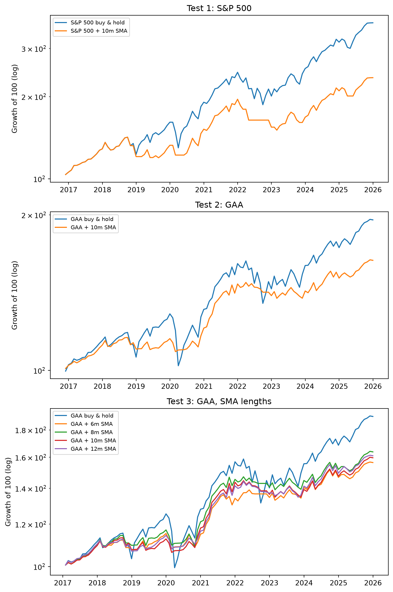

import numpy as np
import pandas as pd
import yfinance as yf
import matplotlib.pyplot as pltTesting SMA Trading Strategy - 2016 to 2026
This project was inspired by Professor Yi Tang at Fordham University, Gabelli School of Business as part of my Investment Applications class.
Professor Tang introduced the findings of Faber and showed that a SMA strategy outperformed buying and holding prior to 2016. Now that we are in a new decade though, it seems worthwhile to test if this strategy still holds, and if not, why not?
(It also acts as a good way to practice python and get out of R-world)
The Results: –> Buy and hold had higher total returns in both tests –> SMA had less volatility, smaller max drawdowns, and higher Sharpe ratios –> The pattern was consistent across all four window lengths
My takeaway: the SMA rule buys protection from big drops at the cost of some upside. That cost was clear in a decade where US stocks mostly rose.
Possible issues: Abnormal decade with mostly positive sp500 returns, cash is not re-invested into short term bonds, I replaced Faber’s indices with ETFs (because I’m not willing to pay for that data).
Feel free to check out my program:
START_DATE = "2016-01-01"
END_DATE = "2026-01-01"SP500 = "SPY"
GAA = {"SPY":"US Stocks", "EFA":"Foreign Stocks", "IEF":"10yr Bonds", "VNQ":"REIT", "GSG":"Commodities"}
FUNDS = 0.0def get_prices():
tickers = sorted(set([SP500, *GAA]))
daily = yf.download(tickers, start = START_DATE, end = END_DATE, auto_adjust = True, progress = False)["Close"]
group_by_month = daily.resample("ME")
monthly = group_by_month.last().dropna(how="all")
return monthlydef sma_strategy(prices, assets, months):
returns = prices.pct_change()
sma = prices[assets].rolling(months).mean()
above_sma = prices[assets] > sma
in_market = above_sma.shift(1, fill_value = False)
sma_ready = sma.notna().shift(1, fill_value = False)
cash_returns = pd.DataFrame(FUNDS, index = returns.index, columns = assets)
asset_returns = returns[assets].where(in_market, cash_returns)
asset_returns = asset_returns.where(sma_ready)
portfolio = asset_returns.mean(axis = 1, skipna = False)
return portfolio.dropna()def buy_and_hold(prices, assets):
return prices.pct_change()[assets].mean(axis=1)def stats(returns):
years = len(returns) / 12
growth = (1 + returns).prod()
curve = (1 + returns).cumprod()
total_return = growth - 1
cagr = growth ** (1 / years) - 1
volatility = returns.std() * np.sqrt(12)
sharpe = returns.mean() / returns.std() * np.sqrt(12)
drawdown = curve / curve.cummax() - 1
max_drawdown = drawdown.min()
worst_month = returns.min()
return {"Total return":total_return, "CAGR":cagr, "Volatility":volatility, "Sharpe":sharpe, "Max drawdown":max_drawdown, "Worst month":worst_month}def show(title, series):
start = max(returns.index[0] for returns in series.values())
window = {name: returns.loc[start:] for name, returns in series.items()}
end = max(returns.index[-1] for returns in window.values())
table = pd.DataFrame({name: stats(returns) for name, returns in window.items()}).T
formatted = table.copy()
for column in formatted.columns:
if column == "Sharpe":
formatted[column] = table[column].map(lambda x: f"{x:7.2f}")
else:
formatted[column] = table[column].map(lambda x: f"{x:7.1%}")
print(f"\n=== {title} ===")
print(f"(compared over {start:%Y-%m} to {end:%Y-%m})")
print(formatted.to_string())
return windowdef main():
prices = get_prices()
print(f"Data: {prices.index[0]:%Y-%m} to {prices.index[-1]:%Y-%m} (test window starts {START_DATE[:7]})")
print("Note: the latest month may be incomplete if run before month-end.")
# Test 1: S&P 500 vs SMA(10)
sp500_buy_and_hold = buy_and_hold(prices, [SP500])
sp500_sma = sma_strategy(prices, [SP500], 10)
test_1 = {"S&P 500 buy & hold": sp500_buy_and_hold, "S&P 500 + 10m SMA": sp500_sma}
window_1 = show("Test 1: S&P 500 vs 10-month SMA", test_1)
# Test 2: GAA vs SMA(10)
assets = list(GAA)
gaa_buy_and_hold = buy_and_hold(prices, assets)
gaa_sma = sma_strategy(prices, assets, 10)
test_2 = {"GAA buy & hold": gaa_buy_and_hold, "GAA + 10m SMA": gaa_sma}
window_2 = show("Test 2: 5-asset GAA vs 10-month SMA", test_2)
# Test 3: GAA with different SMA lengths
test_3 = {"GAA buy & hold": gaa_buy_and_hold}
for months in (6, 8, 10, 12):
test_3[f"GAA + {months}m SMA"] = sma_strategy(prices, assets, months)
window_3 = show("Test 3: GAA with 6, 8, 10, 12-month SMA", test_3)
# Chart
fig, axes = plt.subplots(3, 1, figsize = (8, 12))
charts = [("Test 1: S&P 500", window_1), ("Test 2: GAA", window_2), ("Test 3: GAA, SMA lengths", window_3)]
for ax, (chart_title, window) in zip(axes, charts):
for name, returns in window.items():
growth_of_100 = (1 + returns).cumprod() * 100
ax.plot(growth_of_100, label = name)
ax.set_title(chart_title)
ax.set_yscale("log")
ax.set_ylabel("Growth of 100 (log)")
ax.legend(fontsize = 8)
fig.tight_layout()
fig.savefig("sma_results.png", dpi = 150)
print("\nSaved chart: sma_results.png")
if __name__ == "__main__":
main()Data: 2016-01 to 2025-12 (test window starts 2016-01)
Note: the latest month may be incomplete if run before month-end.
=== Test 1: S&P 500 vs 10-month SMA ===
(compared over 2016-11 to 2025-12)
Total return CAGR Volatility Sharpe Max drawdown Worst month
S&P 500 buy & hold 272.8% 15.4% 15.4% 1.01 -23.9% -12.5%
S&P 500 + 10m SMA 134.7% 9.8% 11.9% 0.85 -23.0% -8.8%
=== Test 2: 5-asset GAA vs 10-month SMA ===
(compared over 2016-11 to 2025-12)
Total return CAGR Volatility Sharpe Max drawdown Worst month
GAA buy & hold 95.6% 7.6% 11.5% 0.69 -20.7% -14.5%
GAA + 10m SMA 63.3% 5.5% 6.2% 0.90 -6.8% -3.9%
=== Test 3: GAA with 6, 8, 10, 12-month SMA ===
(compared over 2017-01 to 2025-12)
Total return CAGR Volatility Sharpe Max drawdown Worst month
GAA buy & hold 90.7% 7.4% 11.6% 0.68 -20.7% -14.5%
GAA + 6m SMA 56.4% 5.1% 5.9% 0.87 -6.3% -3.9%
GAA + 8m SMA 63.8% 5.6% 6.5% 0.88 -6.8% -3.9%
GAA + 10m SMA 59.7% 5.3% 6.2% 0.87 -6.8% -3.9%
GAA + 12m SMA 61.1% 5.4% 5.9% 0.92 -6.5% -3.9%
Saved chart: sma_results.png